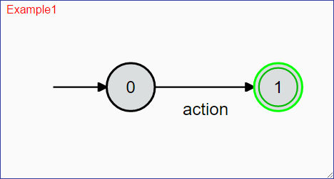
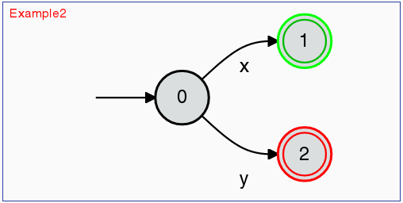
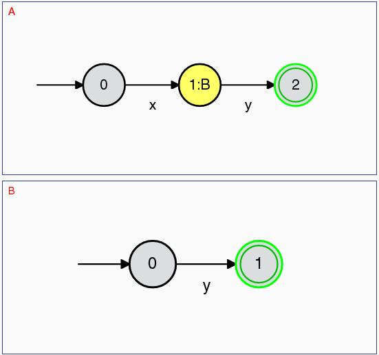
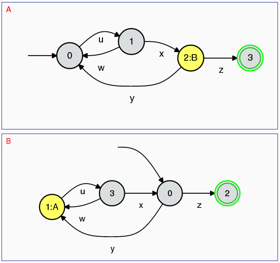

Examples:
Example 1: Sequence
Example1 = action -> STOP.
Example 2: Choice
Example2 = x -> STOP | y -> ERROR.
Example 3: Simple Referencing
A = x -> B.
B = y -> STOP.
Example 4: Referencing
A = u -> (w -> A | x -> B).
B = y -> A | z -> STOP.
Operations:
| Name | Use | Description |
|---|---|---|
| Sequence | [label] ‐> [next state] | Create a transition path from the current state to the next state with the specified label. |
| Choice | [label A] ‐> [state A] | [label B] ‐> [state B] | Create a transition path from the current state to each of the specified states with the respective label. |
| Parallel (Not yet supported) | [state A] || [state B] |
Terminals:
| Name | Description |
|---|---|
| STOP | A successful termination. |
| ERROR | An unsuccessful termination. |
Grammar:
Automata Name: First character must be an uppercase alphabet character. Following can be any alpha-numeric characters (excluding all whitespace).Edge Label: First character must be a lowercase alphabet character. Following can be any alpha-numeric characters (excluding all whitespace).
Definition End: '.'
Definition Assignment: '='
Choice Operation: '|'
Sequence Operation: '->'
Sequence Stop: 'STOP'
Starting from the toolbar from the top left, the pink compile button is used to compile your defined automata and display your automata. You use the save and open buttons alongside this to open and save predifined automata. The definition frame on the left below the main tool buttons is the input area for defining automata. Refer to 'Automata Definition' for more information on how to define your automata.

On the right is the automata frame and displays your automata outlined in the definition frame, once the compile button is used. If their is an error in the definition, an alert will be shown on the console which can be found right beneath the text frame, outlining the error. Just above the automata frame where the defined automata are pictured, is the walker tool. The walker tool allows the navigation of the currently displayed automata by first selecting the automata you want to navigate, then selecting the edge to navigate down. Clicking the walk button will confirm the selected options and walk through the automata one step. The blue coloured node as shown below shows the current node that is being visited.